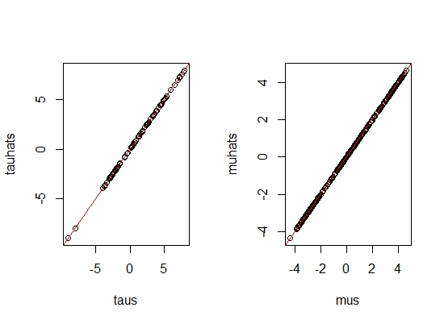

In this project, we provide a brief overview of the Bayesian perspective of causal inference based on the potential outcomes framework. The first part of the project deals with reviewing causal estimands, assumptions and the general structure of Bayesian inference of causal effects. The second part deals with Bayesian Non-parametric Modeling for Causal Inference using Bayesian Additive Regression Trees (BARTs) which are claimed to handle a large number of predictors and heterogeneous treatment effects.
The "Fundamental Problem of Causal Inference" inherently potrays causal inference as a missing data problem. The Bayesian paradigm is well equipped to handle the structurally missing potential outcomes as it considers the unobserved potential outcomes as unobserved random variables (viewed as unknown parameters). The entire methodology revolves around specifying a model on all random variables, including the potential outcomes, treatment and covariates. From the posterior predictive distributions of the parameters and the unobserved potential outcomes, we can draw inference on the causal estimands which are functions of model parameters, covariates and potential outcomes. The main reason for switching to Bayesian is that the Bayesian approach offers several advantages for Causal Inference. First of all, it is a rigorous inferential framework with automatic uncertainty quantification without relying on large sample approximations. Thus, it makes studying problems with small sample size or having individual treatment effects, hierarchical or network data simpler. Secondly, it naturally incorporates prior knowledge into causal analysis problems encountered frequently in evaluating spatially correlated exposures. Finally, high-dimensional Bayesian methods, like Bayesian non-paramteric models (to be studied later in this project) provide new tools for analyzing complex data. Inspite of these clear advantages, Causal Inference is dominated still by the frequentist mindset with tools like randomization tests, propensity scores etc. The paucity of thorough appraisal of the current Bayesian Causal Inference literature involving opportunities unique to the Bayesian paradigm motivates me to reflect upon this topic.
The Setup: We focus on the simple instance where we have a binary treatment that can be easily extended to multiple treatments. Consider a sample of units drawn from a target population, indexed by \( i \in \{1,2,...,N\} \). Let \( W_i \) be the binary variable indicating \( W_i=1 \) for active treatment and \( W_i=0 \) for control. For unit \( i \), a vector of \( p \) pre-treatment covariates \( X_i \) are observed at baseline, and an outcome \( Y_i \) is observed after the treatment. Thus, there are four quantities associated with each sampled unit: \( Y_i(0),Y_i(1),W_i,X_i \), out of which three are observed - \( W_i, Y_i^{\text{obs}}=Y_i (W_i), X_i \) and one is missing - \( Y_i ^{\text{mis}}=Y_i(1-W_i) \). Given \( W_i \), there is a bijection between \( (Y_i ^{\text{obs}}, Y_i ^{\text{mis}}) \) and \( Y_i (0), Y_i (1)) \) as \( Y_i ^{\text{obs}} = Y_i(1)W_i + Y_i(0)(1-W_i) \).
Causal Estimand under consideration:
- Conditional average treatment effect (CATE): \(\tau(x)=E[Y_i(1)-Y_i(0)|X_i=x] \)
In order to perform Bayesian inference of the estimand \( \tau = \tau(Y^{\text{obs}},Y^{\text{obs}},W) \), we obtain the joint posterior predictive distributions of \(Y^{\text{mis}}, \theta\), and thus \(Y^{\text{mis}}\) and eventually \( \tau \). Then we can factorize the joint distribution into: $$P(Y_i(0),Y_i(1),W_i,X_i|\theta)=P(W_i|Y_i(0),Y_i(1),X_i,\theta_W)P(Y_i(0),Y_i(1)|X_i,\theta_Y)P(X_i|\theta_X) $$. Now let us list the assumptions:
- ( Positivity ): \(0 < P(W_i=1|X_i,Y_i(0),Y_i(1))<1 \) for all \( i \).
- ( Ignorability ): \( P(W_i=1|X_i,Y_i(0),Y_i(1))=P(W_i=1|X_i) \).
- SUTVA
- A priori distinct and independent parameters for \( \theta_W, \theta_Y \)
- ( Ignorable assignment ): \(P(W_i|Y_i(0),Y_i(1),X_i)=P(W_i|X_i) \)
A brief overview of the sampling scheme is mentioned here. Minute details will be added later. Resorting to Gibbs Sampling for Data Augmentation:
- Iteratively simulate \( Y^{\text{mis}} \) and \( \theta \) from \(P(Y^{\text{mis}}|Y^{\text{obs}},W,X,\theta) \) and \(P(\theta|Y^{\text{mis}},Y^{\text{obs}},W,X) \).
- Posterior predictive distribution of \(Y^{\text{mis}} \): $$P(Y^{\text{mis}}|Y^{\text{obs}},W,X,\theta) \propto \prod_{i:W_i=1} P(Y_i(0)|Y_i(1),X_i,\theta_Y) \prod_{i:W_i=0} P(Y_i(1)|Y_i(0),X,\theta_Y)$$
- Impute missing potential outcomes for treated units and control units.
- Imputation dependes on the model \(P(Y_i(1),Y_i(0)|X_i) \).
In general, when we are provided a causal graph, the do-calculus is generally dependable and fluid for non-parametric identification. However, many practical assumptions cannot be expressed solely in terms of the graph structure (e.g. Instrumental variable designs require monotonicity or linearity). The do-calculus ignores the necessary restrictions on structural functions for these designs and hence are inconclusive! Thus, we feel the need of an alternative strategy- a Bayesian one. We can express causal assumptions as priors over SCMs, which induces a joint distribution over observed and counterfactual random variables. In this project I will discuss a Simulation-Based Identifiability (SBI) based on (Witty et.al (2021))). It is an automated identification technique compatible with any prior over SCMs that basically translates the problem of causal identification to an optimization procedure which aims at maximizing the data likelihood of two candidate SCMs while maximizing the distance between their causal effect estimates. When causal effects are identifiable, the two models converge to the same causal effect and if they are not identifiable, then SBI discovers Maximum Likelihood models that estimate different causal effects.
Notation: The notation \( V_{V'=v'}\) refers to the set of random variables \( V \) induced by an intervention \(do(V'=v')\). \( U \) represents latent confounders and \( \epsilon \) exogenous noise. We assume that \(V\) and \(U\) are composed of \(n\) i.i.d. random variables \(V_i, U_i \) respectively. We may consider paramteric priors \(P(f)\) over each \(f \in F\) where \(F\) is a fixed set of deterministic causal functions. The other choice of priors can be semi-parametric i.e. priors which can only be marginalized over to induce a joint distribution over observable and counterfactual random variables (Bayesian non-parametric priors).
Now we define identifiability in Bayesian Causal Inference.
Given a prior over functions, latent confounders and noise in a SCM \(P(F,U,\epsilon)\), we are interested in the posterior distribution of causal effects, \(P(Q(V_{V'=v'},V_{V'=v''})|V)\). Here \(Q\) is the causal estimand of concern which, in our case is \( \tau \).
Let \( F^{*},U^{*},\epsilon^{*} \sim P(F,U,\epsilon) \) be a sample from the prior, and \(V^{*},V^{*}_{V'=v'},V^{*}_{V'=v''}\) be the set of observed and counterfactual random variables generated by applying \( F^{*} \) to \( U^{*} \) and \( \epsilon^{*} \).
Definition 1. The causal estimand \(Q\) is identifiable given a sample \( F^{*},U^{*},\epsilon^{*} \sim P(F,U,\epsilon) \) if the posterior \(Q(V_{V'=v'},V_{V'=v''})|V^{*}\) converges to \(Q(V^{*}_{V'=v'},V^{*}_{V'=v''})\) as \( n \rightarrow \infty \).
The foundation of the SBI procedure is relating identifiability to the question: "Do multiple Maximum Likelihood SCMs produce distinct causal effects?" So, let us dig into the math!
We encounter the following objective function:$$L(F^{1},U^{1},F^{2},U^{2},V^{*}) = \log P(V^{*}|F^{1},U^{1}) + \log P(V^{*}|F^{2},U^{2}) + \lambda \Delta Q $$
here \( \Delta Q = |Q^{1}-Q^{2}| \), where \(Q^{1}, Q^{2} \) are the causal estimates resulting from each of the two SCMs: \( (F^{1},U^{1},\epsilon^{*}) \) and \( (F^{2},U^{2},\epsilon^{*}) \) respectively, \( \lambda \) is a real hyperparameter. Now, let \( \hat{F}^{1},\hat{U}^{1},\hat{F}^{2},\hat{U}^{2}) \) denote a solution that maximizes \(L\) and let \( \Delta \hat{Q} \) be the corresponding \( \Delta Q \), then we claim the following:
Theorem 1. For any \( V^{*} \sim P(V|F^{*},U^{*}) \), then \( P(V^{*}|\hat{F}^{1},\hat{U}^{1}) \) and \(P(V^{*}|\hat{F}^{2},\hat{U}^{2}) \) converge to \(P(V^{*}|F^{*},U^{*}) \) as \( n \rightarrow \infty \).
Proof: We prove this by contradiction. WLOG, assume that \(P(V^{*}|\hat{F}^{1},\hat{U}^{1})\) does not converge to \(P(V^{*}|F^{*},U^{*})\) as \(n \rightarrow \infty \). Therefore, we must have \( \frac{P(V^{*}|\hat{F}^{1},\hat{U}^{1})}{P(V^{*}|F^{*},U^{*})} \rightarrow 0 \) as \( n \rightarrow \infty \) (since, for i.i.d. data E \( \left[\frac{P(V^{*}|\hat{F}^{1},\hat{U}^{1})}{P(V^{*}|F^{*},U^{*})} \right]=p^n \) where \(p \in (0,1) \)). $$L(\hat{F}^{1},\hat{U}^{1},\hat{F}^{2},\hat{U}^{2},V^{*}) \ge L(\hat{F}^{*},\hat{U}^{*},\hat{F}^{*},\hat{U}^{*},V^{*})$$
which implies $$\log P(V^{*}|\hat{F}^{1},\hat{U}^{1}) + \log P(V^{*}|\hat{F}^{2},\hat{U}^{2}) + \lambda|\hat{Q}^{1}-\hat{Q}^{2}| \ge 2\log P(V^{*}|\hat{F}^{*},\hat{U}^{*}) $$
Reframing this inequality we get $$ 0 \le \log \frac{P(V^{*}|\hat{F}^{1},\hat{U}^{1})}{P(V^{*}|F^{*},U^{*})} + \log \frac{P(V^{*}|\hat{F}^{2},\hat{U}^{2})}{P(V^{*}|F^{*},U^{*})} + \lambda | \hat{Q}^{1}-\hat{Q}^{2}| \rightarrow \log(0)+\frac{P(V^{*}|\hat{F}^{2},\hat{U}^{2})}{P(V^{*}|F^{*},U^{*})}+\lambda | \hat{Q}^{1}-\hat{Q}^{2}| \rightarrow -\infty$$ as \( n\rightarrow \infty\), which is a contradiction!
Moving on to our next claim, we can show that as \( n \rightarrow \infty \), the difference between Maximum Likelihood causal estimates is maximized by \( \Delta \hat{Q} \). We define \( \mathbb{L} \) to be the set of maximum likelihood functions and latent confounders \((F,U)\).
Theorem 2. \(\Delta \hat{Q} \rightarrow \max_{(F^{1},U^{1},F^{2},U^{2}) \in \mathbb{L}} \Delta Q \) as \( n \rightarrow \infty \).
Proof: Again towards a contradiction, assume that there exists some \( (F^{1},U^{1},F^{2},U^{2}) \) such that $$ L(F^{1},U^{1},F^{2},U^{2},V^{*}) \le L(\hat{F}^{1},\hat{U}^{1},\hat{F}^{2},\hat{U}^{2},V^{*}) \& |Q^{1}-Q^{2}| > |\hat{Q}^{1}-\hat{Q}^{2}| $$ By Theorem 1, we have that \(P(V^{*}|F^{1},U^{1}),P(V^{*}|F^{2},U^{2}),P(V^{*}|\hat{F}^{1},\hat{U}^{1}),P(V^{*}|\hat{F}^{2},\hat{U}^{2})\) all converge to \(P(V^{*}|F^{*},U^{*})\) as \(n \rightarrow \infty \). But plugging in the expression for \(L\), we have that $$2 \log P(V^{*}|F^{*},U^{*})+|Q^{1}-Q^{2}| \le 2\log P(V^{*}|F^{*},U^{*})+|\hat{Q}^{1}-\hat{Q}^{2}| \implies |Q^{1}-Q^{2}| \le |\hat{Q}^{1}-\hat{Q}^{2}| $$ This is a contradiction!
Finally comes the result we are looking for!
Theorem 3. A causal estimand \( Q \) is identifiable given a prior \(P(F,U,\epsilon)\) and a sample \(F^{*},U^{*},\epsilon^{*} \) from that prior iff \( \Delta \hat{Q} \rightarrow 0 \) as \( n \rightarrow \infty \).
Proof: By Theorem 1, we have that \( (\hat{F}^{1},\hat{U}^{1}) \) and \( (\hat{F}^{2},\hat{U}^{2}) \) are in the set of functions that maximize the log-likelihood of the data asymptotically. We need the following result:
Lemma: A causal estimand \( Q \) is identifiable given a sample \( F^{*},U^{*},\epsilon^{*} \sim P(F,U,\epsilon) \) iff there does not exist an \((F^{+},U^{+})\) such that \(P(V^{*}|F^{+},U^{+})\) converges to \(P(V^{*}|F^{*},U^{*})\) as \( n \rightarrow \infty \), \(Q(V^{+}_{V'=v'},V^{+}_{V'=v''})\neq Q(V^{*}_{V'=v'},V^{*}_{V'=v''})\) and \(P(F^{+},U^{+})>0\). Here \(V^{+}_{V'=v'}\) and \(V^{+}_{V'=v''}\) are counterfactual outcomes generated by applying \(F^{+}\) to \(U^{*}\) and \(\epsilon^{*}\).
The if-part of the lemma follows from the Bernstein-von Mises Theorem which states that under certain regularity conditions the posterior distribution of any random variable is asymptotically consistent.
The only-if part can be shown by looking into all \((F^{+},U^{+}) \in \text{support}(P(F,U))\) and the set \( \mathbb{A}=\{(F,U) : Q(V_{V'=v_{1}'}, V_{V'=v_{2}'}), P(F^{+},U^{+})>0 \}\): $$P(Q(V^{+}_{V'=v'},V^{+}_{V'=v''})|V^{*}) = \int_{(F,U) \in \mathbb{A}} P(F,U|V^{*}) dF dU$$ We can use Bayes' Theorem to write the RHS expression as $$\frac{P(V^{*}|F^{*},U^{*})}{P(V^{*})} \int_{(F,U) \in \mathbb{A}} \frac{P(V^{*}|F,U)}{P(V^{*}|F^{*},U^{*})} P(F,U) dF dU \ge \frac{P(V^{*}|F^{*},U^{*})}{P(V^{*})} \int_{(F,U) \in \mathbb{A} \cap \mathbb{L}^{*}} P(F,U) dF dU $$ where \(\mathbb{L}^{*} = \{ (F,U): \frac{P(V^{*}|F,U)}{P(V^{*}|F^{*},U^{*})} \rightarrow 1 \ \text{as} \ n \rightarrow \infty \} \). Thus, we have that $$\frac{P(Q(V^{+}_{V'=v'},V^{+}_{V'=v''})|V^{*})}{P(Q(V^{*}_{V'=v'},V^{*}_{V'=v''})|V^{*})} > 0 \ \text{if} \ \mathbb{A} \cap \mathbb{L}^{*} \neq \phi$$.
Coming back to proving the original theorem, if \(|\hat{Q}^{1}-\hat{Q}^{2}| >0 \), then at least one of \((\hat{F}^{1},\hat{U}^{1})\) or \((\hat{F}^{2},\hat{U}^{2})\) are a \((F^{+},U^{+})\) satisfying the lemma above.
Now, by Theorem 2, we have that \( |\hat{Q}^{1}-\hat{Q}^{2}| \) maximizes the distance between induced causal effects. Therefore, if \(|\hat{Q}^{1}-\hat{Q}^{2}| \rightarrow 0 \) as \(n \rightarrow \infty \), no such \((F^{+},U^{+})\) exists.
Theorem 3 provides a sufficient condition for determining identifiability aymptotically, which holds in the i.i.d case. However, in practice, this is unrealistic and \( \Delta \hat{Q} \) maybe larger than \(0\) even if the causal estimand is not identifiable. Thus, we should impose additional assumptions.
Assumption: Let \(E_{V^{*},n} \Delta \hat{Q} \) denote the expected difference between causal estimates for \( n \) instances and the asymptotic difference be \(E_{V^{*},\infty} \Delta \hat{Q} \), then $$E_{V^{*},n} \Delta \hat{Q} \ge E_{V^{*},\infty} \Delta \hat{Q} \ \forall n \in \mathbb{N}$$
The usefulness of this assumption is that we can get probabilistic bounds on \( P(E_{V^{*},\infty} \Delta \hat{Q} \ge t) \) for some user-defined threshold \(t\), since $$P(E_{V^{*},\infty} \Delta \hat{Q} \ge t) \le P(E_{V^{*},n} \Delta \hat{Q} \ge t) \ \forall n \in \mathbb{N}$$
We can approximate \(E_{V^{*},n} \Delta \hat{Q} \) by repeatedly simulating \(V^{*} \sim P(V|F^{*},U^{*}) \) and then optimizing \(L\) to find \( \Delta \hat{Q} \) for each sample. If we have a large number of simulations, it is reasonable enough to assume CLT for the sample mean. We are now all set to describe our algorithm!
- Prior: \(P(F,U,\epsilon)\)
- Causal Estimand and interventions: \(Q, V',v',v''\)
- Hyperparamters: \(n,k,\lambda\), threshold \(t\) and acceptance probability \(p\)
- \(F^{*},U^{*} \sim P(F,U) \) (Prior sample)
- for \(i=1(1)k\) do
- \(V_i ^{*} \sim P(V|F^{*},U^{*}) \)
- \(\hat{F}^{1},\hat{U}^{1},\hat{F}^{2},\hat{U}^{2} \leftarrow \arg \max L(F^{1},U^{1},F^{2},U^{2},V_{i}^{*})\) (can be done using gradient descent)
- \(\hat{Q}_{i}^{1} \leftarrow Q(\hat{V}_{V=v'}^{1},\hat{V}_{V=v''}^{1}) \) (SCM 1 effect)
- \(\hat{Q}_{i}^{2} \leftarrow Q(\hat{V}_{V=v'}^{2},\hat{V}_{V=v''}^{2}) \) (SCM 2 effect)
- \(\hat{\mu} \leftarrow \frac{1}{k} \sum_{i=1}^{k}|\hat{Q}_{i}^{1}-\hat{Q}_{i}^{2}| \)
- \(\hat{\sigma}^2 \leftarrow \frac{1}{k-1} \sum_{i=1}^{k} (\hat{\mu}-|\hat{Q}_{i}^{1}-\hat{Q}_{i}^{2}|)^2\)
- if \( \Phi \left(\frac{(\hat{\mu}-t)\sqrt{k}}{\hat{\sigma}^2} \right) \le p\), then Identifiable
- else Not Identifiable
To summarize, we first sample a set of functions, \(F^{*}\) and latent confounders, \(U^{*}\), from the prior. Then, we repeatedly sample a set of observations, \(V^{*}\). For each set of observations optimize \(L\) jointly for two SCMs. Finally, return True if the expected distance between causal estimates is greater than \(t\) with probability less than \(p\) and return False otherwise.
In conclusion, we looked at Simulation-Based Identifiability, an automated approach for causal identification. In this project, we proved that SBI is sound and complete in the limit of infinite samples and provided practical finite-sample bounds. The most important fact being that SBI correctly determines identifiability empirically with in causal designs, which are out of scope for the do-calculus.
In the second half of this project, I follow the lines of Hill (2010)'s approach towards Bayesian Non-parametric modeling using BART. It has gained recognition since the BART algorithm is easy to implement and requires no information about how the outcome, treatment assignment and confounding covariates are parametrically related.
Setup: We aim to estimate a model for the outcome \( Y \) , specified as \(y_i=f(x_i)+\epsilon_i \), where \( x \) denotes the observed confounding covariates and \( \epsilon \sim N(0,\sigma^2) \) and \( f \) is an unknown function. The BART prior represents \(f(x)\) as a sum of many piecewise constant binary regresion trees $$ f(x)=\sum_{l=1}^{L} g_l (x,T_l,\mu_l) $$ where \(T_l\) denotes a regression tree and \(\mu_l\) denotes a vector of means associated to the leaf nodes of \(T_l\).
BART has some potentially important advantages over alternative methods such as random forests, boosting, and neural nets ( ESLR (2003) ). Harping on the advantages of using BART for Causal Inference:
- BART’s performance using the default prior is highly competitive in terms of prediction with other methods that rely on cross-validation to tune algorithm parameters ( Chipman (2007) ).
- BART can handle very large numbers of predictors.
- In case of missing outcome data, we can have a straightforward solution under the assumption of a missing-at-random missing data mechanism by simply fitting the BART model to the complete case sample but make predictions for the full sample.
Each tree \( T_l \) consists of a set of internal decision nodes which define a partition of the covariate space \( (A_1,...,A_{B(l)})\), as well as a set of terminal nodes or leaves corresponding to each element of the partition. Each element of the partition \(A_b\) is associated a parameter value \( \mu_{lb} \). The tree prior \( p(T_l)\) is specified by:
- The probability of a node having children at depth \(d \) $$ \alpha (1+d)^{-\beta}, \ \alpha \in (0,1), \ \beta \in [0,\infty)$$
- The Uniform distribution over available predictors for splitting rule assignment at each interior node
- the Uniform distribution on the discrete set of available splitting values for the assigned predictor at each interior node.
The basic BART MCMC proceeds as a Metropolis- within-Gibbs algorithm, with the key update of the individual regression trees being conducted as a lo- cal random walk Metropolis-Hastings (MH) update, given all of the other trees as well as the residual variance parameter, \( \sigma^2 \). Let \( \mathcal{T} \) denote the set of trees and \( \mathcal{M} \) denote the set of lead parameter vectors. Let \( |\mathcal{T}|=|\mathcal{M}|=L \) and each \( \mu_l \in \mathcal{M} \) is length \( B(l) \). The estimation steps proceed by the following Gibbs updates:
- \(T_l, \mu_l | r_l, \sigma^2 \), for \(l=1,2,...,L\) is sampled accordingly by sampling the following conditionals:
- \(T_l | r_l,\sigma^2 \)
- \(\mu_l | T_l, r_l, \sigma^2 \)
- \( \sigma^2 | r \) for residuals defined as $$ r_l ^{(k+1)} = y-\sum_{l' < l}g(X,T_{l'},\mu_{l'})^{(k+1)}-g(X,T_{l'},\mu_{l'})^{(k)} $$ and $$r^{(k)}=y-\sum_{l=1}^{L} g(X,T_l,\mu_l)^{(k)}$$
It turns out that BART is remarkably effective smaller problems with dozens of predictors and thousands of observations. However, it does not work well for larger problems with hundreds of thousands of observations. Thus, we present a new stochastic hill climbing algorithm called Accelerated Bayesian Additive Regression Trees (XBART), which follows the Gibbs update framework but replaces the Metropolis-Hastings updates of each single tree by a new grow-from-root backfitting strategy. This makes the computations faster!
Grow-From-Root Backfitting
Rather than making small moves to a given tree \(T_{l}^{(k)}\) at iteration \( k+1 \), we ignore the current tree and grow an entirely new tree \(T_{l}^{(k+1)}\) from scratch. We grow each tree recursively and stochastically and the tree growing process is also terminated stochastically, based on the residuals defined above. We present the pseudo-code for the Grow-From-Root (gfr, in short) algorithm as follows:Algorithm (gfr)
- procedure gfr \((y,X,C,m,w,\sigma^2)\) to fit a tree using data \(y\) and \(X\) by recursion
-
output A tree \(T_l\) and a vector of split counts \( w_l \).
- \(N\): number of rows of \(y,x\)
- Sample \(m\) variables using weight \(w\) where \(w \sim \text{Dir}(\bar{w}=1) \) (vector of all ones)
- Select \(C\) cutpoints where \(C=\max(\sqrt{n},100)\)
- Evaluate \(C \times m+1\) candidate cutpoints and no-split option
- if sample no-split option then Sample leaf parameter from normal distribution \(\mu \sim N \left(\frac{\sum y}{\sigma^2(\frac{1}{\tau}+\frac{N}{\sigma^2})},\frac{1}{\frac{1}{\tau}+\frac{N}{\sigma^2}} \right)\) return else
- \(w_l[j]=w_l[j]+1 \), add count of selected split variable.
- Split data to left and right node.
- gfr\((y_{left},X_{left},C,m,w,\sigma^2)\)
- gfr\((y_{right},X_{right},C,m,w,\sigma^2)\)
Now, we are ready to describe the XBART algorithm pseudo-code!.
XBART Algorithm
- procedure XBART \((y,X,C,m,L,I,K,\alpha,\eta)\) where \( \alpha, \eta \) are prior parameters of \(\sigma^2\).
- output Samples of forest
- \(V\): number of columns of \(X\)
- \(N\): number of rows of \(X\)
- Initialize \(r_l^{(0)} \leftarrow \frac{y}{L}\)
- for \(k\) in \(1\) to \(K\) do
- for \(l\) in \(1\) to \(L\) do
- Calculate residual \(r_l^{(k)}\)
- if \(k < I\) then gfr\((r_l^{(k)},X,C,V,w,\sigma^2)\)
- else gfr \((r_l^{(k)},X,C,m,w,\sigma^2)\)
- \(\bar{w} \leftarrow \bar{w}-\bar{w}_l ^{(k-1)} + \bar{w}_l ^{(k)}\)
- \( w \sim \text{Dir}(\bar{w}) \)
- \( \sigma^2 \sim \text{Inv-Gamma} (N+\alpha,(r_l^{(k)})'(r_l^{(k)})+\eta) \)
- return
The second part \(\tau(x_i)\) is a BART model that etimates the treatment effect conditional on some covariates. Since the two parts are separate models, there is flexibility in their specification. First, the same or a different set of covariates can be passed to the two models. If it is plausible that the outcome and treatment effect depend on different covariates, only those covariates can be passed to each BART. Second, the parameters passed to each model can be different. The BART for the treatment effect may be a bit smaller/more restricted, because it may be plausible that the outcome depends on the covariates in a more complex way than the treatment effect, especially when we are used to assume a constant treatment effect for all individuals.
The Setup
Since fitting an Accelerated Bayesian Causal Forest (conglomeration of XBARTs) is more powerful then fitting a single XBART model, we evaluate the Causal Forest model for the following setting. The setup follows the lines of Hahn et.al.(2020):We consider four distinct, but closely related, data generating processes, corresponding to the various combinations of toggling three two-level settings: homogeneous versus heterogeneous treatment effects, a linear versus nonlinear conditional expectation function with sample size \(n=500 \). Five variables comprise \( x \); the first, fourth and fifth are continuous, the second is a dichotomous variable and the third is unordered categorical taking three levels (1,2 or 3).
They are defined in the following \( \texttt{R} \) code chunk:
n = 500
x1 = rnorm(n)
x2 = sample(1:2,n,replace=TRUE)
x3 = sample(1:3,n,replace=TRUE,prob = c(0.3,0.4,0.3))
x4 = rnorm(n)
x5 = rnorm(n)
x = cbind(x1,x4,x5,x2,as.factor(x3))
homogeneous = FALSE # choose if homogeneous
if(homogeneous) {tau = rep(3,n)
} else {tau = 1 + 2*x[,2]*x[,4]}
linear = TRUE # choose if linear
mu = function(x){
lev = c(2,-1,-4)
if (linear) {result = 1 + lev[x[,5]] + x[,1]*x[,3]
} else {result = -6 + lev[x[,5]] + 6*abs(x[,3] - 1)}
return(result)
}
## define the propensity score function
pi = 0.8*pnorm(3*mu(x)/sd(mu(x))-0.5*x[,1],0,1) + 0.05 + 0.1*runif(n)
## generate treatment assignment scheme
z = rbinom(n,1,pi)
## generate response variable
mu = mu(x)
Ey = mu + tau*z
sig = 0.5*sd(Ey)
y = Ey + sig*rnorm(n)
library(XBCF)
## specify the number of categorical variables in x
p_cat = 2
## run xbcf
fit_xbcf = XBCF(y, z, x, x, pi, pcat_con = p_cat, pcat_mod = p_cat)
## obtain the treatment effect estimates from the fit
tauhats = getTaus(fit_xbcf)
muhats = getMus(fit_xbcf)
## compute rmse
rmse = function(a,b) {
return(sqrt(mean((a - b)^2)))
}
rmse(tau,tauhats)
The RMSE comes out to be \(1.208 \).
In order to validate our model, we predict with the same inputs this time by plugging in the estimated values. 
Since the predicted \( \tau \)'s and \( \mu \)'s lie on the straight line \(y=x\), our model fitting is indeed correct!
Tabulating our results for the Accelerated Bayesian Causal Forest model we have:XBCF results for ATE, CATE
| Method | n | RMSE (Homogeneous Effects) | RMSE (Heterogeneous effects) |
|---|---|---|---|
| XBCF (ATE) | 500 | 0.142 | 1.208 |
| XBCF (CATE) | 500 | 0.16 | 1.18 |
The grow-from-root strategy proposed here opens
the door for computational innovations to be married to the novel BART stochastic fitting algorithm. Further, the proposed adaptive cut-points
and variable selection proposal together define a
novel predictor-dependent prior, marking a distinct
Bayesian model.
We indeed have consistency results for Accelerated Bayesian Causal Forests. In fact, for a collection of fully grown XBART trees, suppose \(d_n\) is a sequence of max depth of trees. Under certain regularity conditions:
Let \(n \rightarrow \infty, d_n \rightarrow \infty \) and \(\frac{(2^{d_n}-1)(\log n)^9}{n} \rightarrow 0 \)
Then a Bayesian Causal Forest is consistent.
We also compare XBCF with two more models namely: a regularized linear model using the horse-shoe prior (HR) and also vanilla BART under the same simulation settings mentioned before.
Comparison results
| Method | RMSE (Homogeneous Effects) | RMSE (Heterogeneous effects) |
|---|---|---|
| XBCF (ATE) | 0.142 | 1.208 |
| XBCF (CATE) | 0.16 | 1.18 |
| HR (ATE) | 0.26 | 1.25 |
| HR (CATE) | 0.18 | 1.30 |
| BART (ATE) | 0.27 | 1.40 |
| BART (CATE) | 0.35 | 1.58 |
In conclusion, the results indicate that in both scenarios, specially for heterogeneous effects, XBCF is better than some of the contemporary methods in the Causal Estimation literature!